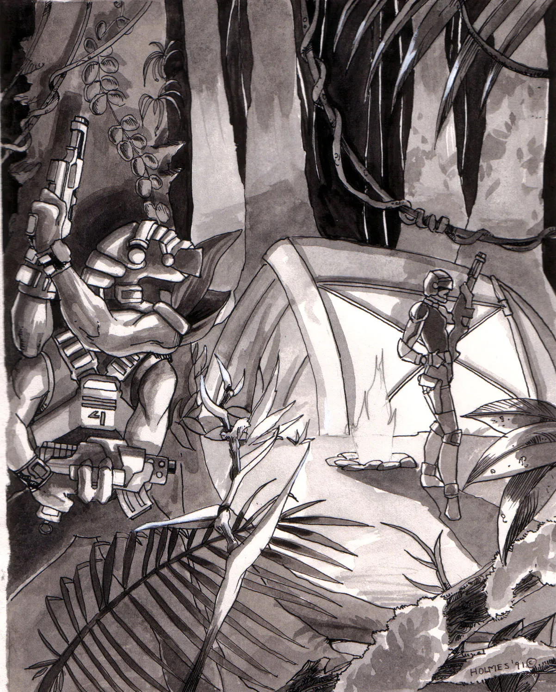
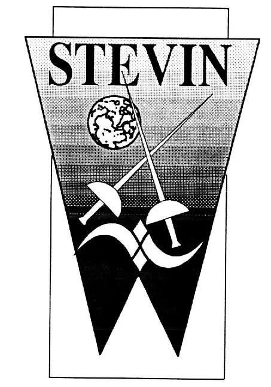
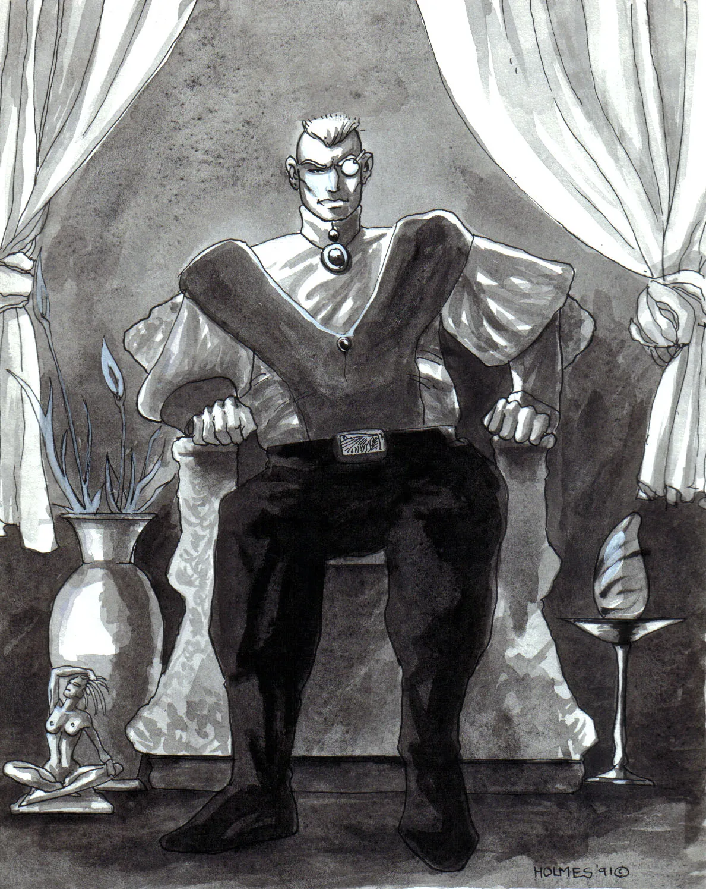
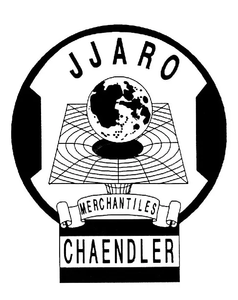
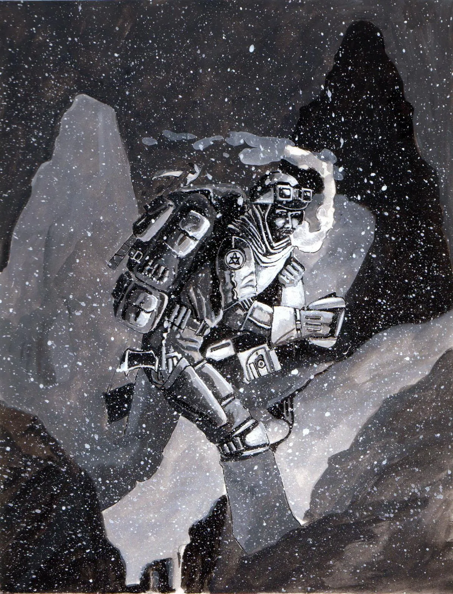
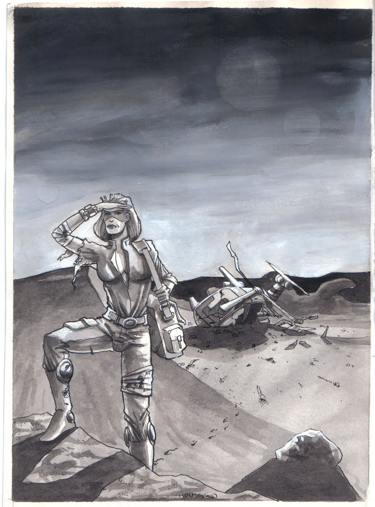
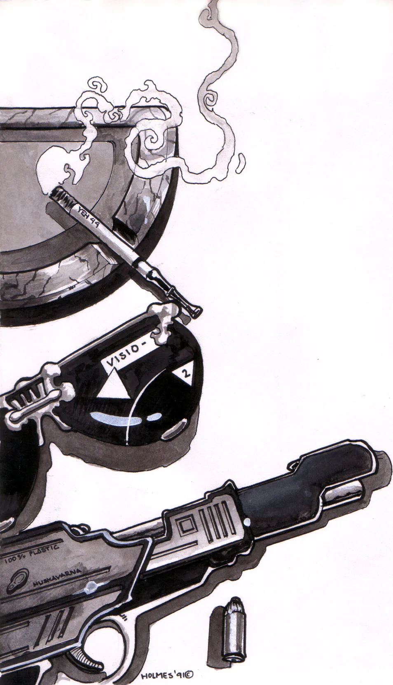
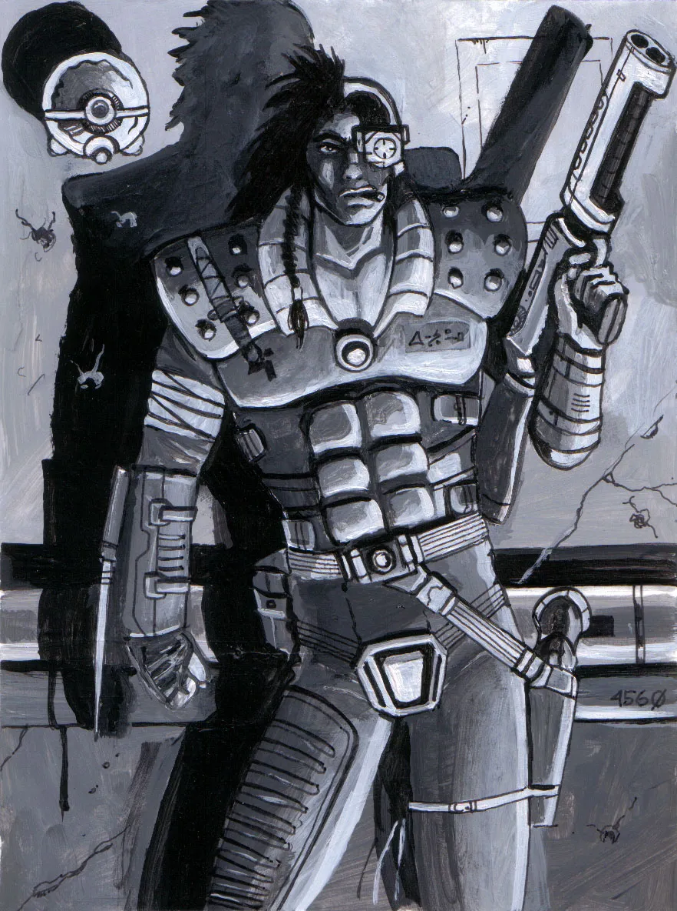
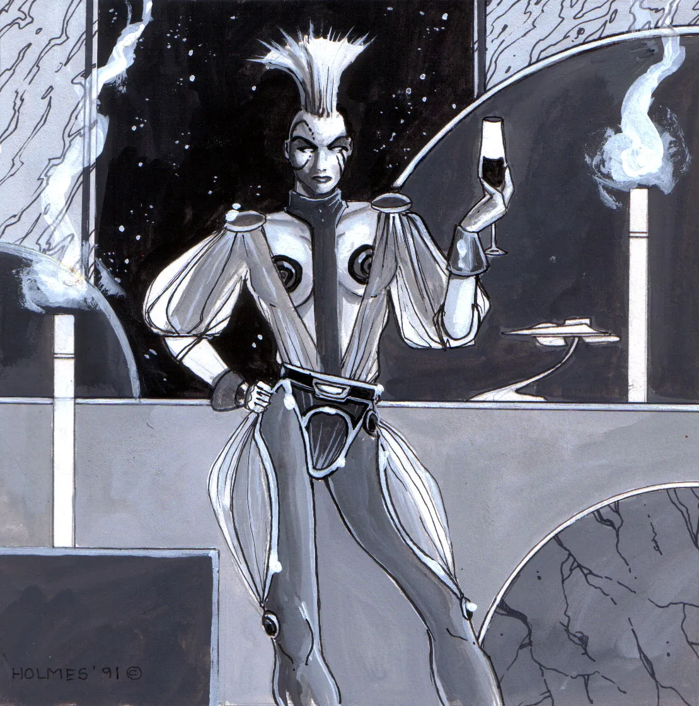

Bounty Hunters
Dead or Alive ...
The interior of the Piper was dark, its black and rust painted walls gave one a sense of impending doom, this wasn't the place I wanted to die. I can't hear him, but I knew he passed this way. A spatter of his blood lay the on the floor where they could mix with mine. He hit me twice the last time we met and in the skirmish, I panicked and threw a frag. He's worth just under eight alive, much less dead. If I'm going to get it I'm going to have to curb my emotions. I know he's heading for the fusion grids, he can find one of the few remaining life boats and jump ship. I'll have to beat him there. He's a good marksman, he capped my left knee, but why he didn't kill me, I don't know. He didn't use the opportunity, perhaps he likes to inflict pain or maybe ... he just couldn't. Either way I was moving slowly, for fear of hyper- extending my injured knee. I have a full medi-pack, but judging by the amount of blood on the floor grating I can't afford to use any of it on myself. I must have caused a fatal injury and so I'll need everything to keep him alive. Somehow the pain I should be feeling is non-existent, every step I take, It feels like my leg is asleep ...
If the sound of being a bounty hunter intrigues you, and the thought of chasing potentially violent people, and being paid for it, is what you are looking for, than look no further. Your opponent may be short a tempered extremely huge Krane or worse ... you could hired to retrieve a top secret, metamorphic, very resourceful, 77 series xeno-product who is as intent on killing you as you are on capturing it. Either way the bounty is the prime motive, unless of course the job is personal. Each job takes a certain amount of planning and it is how you execute these plans that categorizes you into one of the different classes of bounty hunters.
Ruthless Bounty Hunters
don't let anything stand in the way, like laws, innocent people, etc., are just objects between them and their goal. Feared for their complete lack of humanity, this type of bounty hunter will take almost any bounty especially the morally reprehensible ones. To kill the helpless is particularly good sport for ruthless bounty hunters because "they're easy to kill and don't put up a fight - they're easy dits"
Professional Bounty Hunters
have morality as their trademark. They obey laws, feel remorse, and are conscience about the killing they do. It is this type of hunter that forms alliances and never reveals sources - no matter what the personal consequences. They are sought for their extreme morality, sense of good, and public service, but they usually only work for friends or worthy causes. A professional bounty hunter typically has another mainstream job, to provide his main means of support.
Adventurous Bounty hunters
The last basic type, is naïve and in most cases inexperienced, these hunters are looked down upon by others and even ignored. They typically accept bounties, to prove their worthiness and experience, but bumble through them making life hazardous for themselves and others around them. More often than not they fail in their attempt, and finish the bounty with more enemies than they started with. These hunters actually get better as they gain experience, if they survive their first jobs, and can move into either of the other two categories. These three types are the textbook examples, and as such have clear cut personalities, in reality, however, bounty hunters are combinations of all three of them. You are free to combine these in realistic combinations but remember the core of your character has to remain static, barring extreme events (loved ones death, war, etc.), like any real personality does. Bounty hunters often find themselves competing for a bounty and so know each other well. Because of the illegal nature of their profession no real organization for bounty hunters, but several loose congregations have formed. Members usually designate themselves in some fashion, clothing, jewelry, shared scar, etc.
... Suddenly a shot cracked the silence the round ricocheted off a support column and flew just centimetres from my head. Jumping for cover instinctively, my leg twisted grotesquely as I landed. I laid on the floor grid groping for my stun rifle in the intense black. I could hear him coming closer, my heart pounded at my sternum trying to break free. Each beat brought pain. My hand fumbled along the floor and found the butt of the rifle. I pushed my body up and peered around the column. It's cold wet steel was comforting as my cheek pressed against it. There ... augghhh.. there he stood perched against the wall. Grasping at his life as it fell from his abdomen. He raised his gun limply. It fell from his hands ... as he spat out a curse and crumpled to the floor. Silence returned ... There was no need to save my medi- pack now.
Chaendlers
Witch hunt!
Sweat rolled off his forehead. He struggled desperately, straining to remain dead still. The chase had taken its toll. Heart pounding, lungs burning, his throat and mouth about to crack, he spoke to himself,"calm down ... slow down ... breathe, that's it ... breathe."
His back pressed against the frigid wall, his layered clothing, soaked. Screaming voices become audible,
"Get the Chaendler! ... burn him! ... kill him!"
The men who hunted him were, scant minutes ago, his new found friends and trading partners. Forcing down the urge to gasp he holds a breath ... maybe his last. The yells die off. Safe. The breath goes out, like a tide it washes away the screaming pain. These earthen streets, the wooden houses, such a tranquil time, unhurried, far away from the rat race he calls life.
"This is the last time I use an electronic translator with tricky dialects."
The softest "CLICK" at point blank range; the flinter's cocked. Paused, his mind is racing, one last attempt to escape. A leap for safety, the shot's away. A colossal crash - flames curl. Heat sears his ice cold neck. Its sting is sharp and cutting.
All sensation flutters ... his world grows dark and silent ...

The word "Chaendler", originally from the english language, means one who supplies materials (rope, sails etc.) for ships but has now come to mean one who supplies materials by ship. The incorrect translation stems from differences in language forms between the alliance races. Every Chaendler is either a Free Chaendler or a member of one of three organized groups called Guilds. These guilds are commercial companies that have endeavoured to provide trade as a service. Each was established separately to provide a particular brand of service. They are called the Stevin, Jjaro, and the Chchen W'bow guilds. Each offers different services respectively: bulk, low cost and speedy. While the kinds and types of goods each guild has laid claim to are very specific, individual shipments tend to bend, if not shatter, these guidelines. Apprentice Chaendlers are often taken on when they are youths and learn the trade from a master. Then once the student has learned the necessary skills, he is tested by the guild and may be commissioned to a ship for his own trading adventures. The three guilds may also lend currency to their traders to finance their own ships, bank-roll expensive loads, and any other expenses a Chaendler might encounter. Large loans, however, are quite rare and are only bestowed upon preferential members.
The Stevin trading guild
was founded in the year 2172 AD, 67 years ago, as a front for an organized crime syndicate. The Chief Executive Officer, Bintch Sanglweio, was the inner city Don for the major city of Carakuss. He was responsible for over three percent of the Mentangleo family's yearly income. To launder money and provide a legitimate facade for his nefarious business dealings the Stevin trading company was incorporated. Just 13 years after the incorporation Stevin was investigated for tax evasion, racketeering, and other crimes and offences. The formal investigation resulted in the imprisonment of Sanglweio and the selling of the company assets. Stevin traders seemed finished. This was not the case however. A rich and powerful recluse had been buying up the company. She then announced her plan to lead the Stevin mercantile, from its illegal beginnings into a new and prosperous age. Chakàndra A’kolib, the widow of the tyrannical pirate Francis duGhow, was as corrupt as Sanglweio but infinitely better at hiding it. As might be suspected from their colourful history, Stevin guildsmen associate commonly with the various pirate factions. They are routinely called before local and regional courts on charges of piracy. The qualifications necessary to become a Stevin trader are quite lax considering the standards of the other guilds. The reason for this, however, is quite obvious when you a look at the guild's fleet of ships. After countless re-fittings and overhauls they are nothing more than scrap parts that can hold an atmosphere.

Jjaro Chaendlers
are by far the most common traders in the Foundation. They handle most of the small-time commercial shipments for the average citizen. Their reputation as an "on time or free" courier has been impeccable for the last twenty years. Established on the planet of earth in the year 2201, they are the newest of the trading guilds. They were set up to serve the needs of the public and local business, needs that had been long overlooked by the other two trading guilds. The Stevin and Chchen W'bow guilds had set their sights on the large profit potential inherent in the bulk and fast ends of the market. Jjaro guildsmen can often be persuaded to carry human cargo, even though the practice is strictly illegal for anyone but a registered carrier (such as Swift Wind, Otaga, etc.). Over it's relatively short life, the Jjaro guild has consistently loaned very large amounts of currency to it's rather young Chaendlers. Many in the trading industry see this as "just asking for trouble," but the Jjaro have had great success with this policy. Young traders take this responsibility with a great sense of honour and pride. Very few Chaendlers have defaulted on these loans and even fewer still have sought to embezzle the funds. The selection process for prospective Jjaro guildsmen consists of personality screening, and deals only briefly with the skills of a pilot. This elaborate study continues throughout apprenticeship. The tests give the guild insight into their traders' character and possible intentions. The revolutionary ideas for marketing, organizational structure, and decision making stem from the visions of T. Lamphnia (often called just Lam), a pragmatic businesswoman. With little or no experience in the traditional trading company methods, she structured the Jjaro traders to provide a service, using common sense as he guide. Errors were made and hard lessons were learned. Due to this policy, the Jjaro traders have emerged as the guild of choice for new Chaendlers, and the one that is dynamic and responsive to the market.
Chchen W'bow guild
stakes its reputation on having the fastest ships of any other trading guild. They carry only small loads in their extremely fast cruisers. They handle the "overnight" shipments, those that must be delivered with the most directness. Located in the second sphere on Mardasharu, the Chchen W'bow were established over one-hundred and fifty years before the discovery of the Second Sphere. The Chchen W'bow traders are by far the oldest of the three trading guilds, and the largest of all the trading companies in their own sector. Then with the discovery of our arm of the galaxy, the one that contains Earth, Awmonee, and other solar systems, their market was blown wide open. They were alone in the trading business for sixteen years before their first competitor entered the scene. In just ten standard earth years they netted enough profit to upgrade their fleet to its' current standards and to return immense dividends to the shareholders. Their ships, equipped with the absolute latest in navigation systems (Usuall Anthrani computers, and sensors), the newest Delta-warp technology, are totally sleek and are the fastest commercially owned ships in all of space. While the Mahendoshi have their own form of warp technology it requires warp stations at both the destination as well as at the local end of the warp. This limitation is the major reason why they use our Delta-Warp technology. Obviously there are strict entrance requirements to join the guild to pilot these ships. The saying goes "Once a Chchen trader always a Chchen trader" and it's true. A strict code of ethics and loyalties, that each Chchen Chaendler lives by, results in the minimal administration of internal discipline. All things considered, the Chchen Chaendlers are the most disciplined traders in the Galaxy. They have the best ships to pilot which is an extremely notable feature when you entrust your life to their proper function.
... consciousness returns - his thoughts collect. His sight grows clear; a mob is gathered; they wield flaming torches. The yelling voices pound in his head. He is tied to a stake for burning."Witch ... witch ... burn the witch!"
The torches go down, flames ensue.
" ... I'm going to die ... no. No! ... they haven't taken my D-Warp computer."
Heat rises the air is dry, hard to breath and laden with bitter smoke. Choking and about to faint, his fingers lethargically lay in co-ordinates. The unit engages ... space is folded, a hole appears. His life and safety lay just on the other side. Amidst the cries of witch the ropes burn through, he dives toward the hole. His path is sure. He feels the reassuring cool of his spaceship's floor.
"I ... I made it ... I'm home."
Explorers
an excerpt from "Multinex IV"
The terrain swept past him in a 300 kilometre blur. The desert surrounding the two lone Stan trucks was vast and the trucks were only a minor fluctuation in kilometres of monotony. Inside the cabin of the lead truck a lone figure sat piloting the truck in a reclined position, his eyes closed. The chair in which he sat conformed to the curvature of his body and supported the figure. The console in front if him was smooth and shiny, its controls basic in nature and submerged under a sensitive touch matrix. Alann thought to himself ..."Is that damn auto-pilot on the other Stan still with me?" In response to his question a VoICE spoke to him.
"Yes, he's right behind us."
The VoICE was pleasing and soft neither female nor male.
"Scan the area," Alann thought. It was not a command, just a thought. The VoICE spoke to him, "
We are approaching a jungle, thirty seconds ... MARK."
As fast as the thought of slowing down passed through Alann's mind, the speed of both vehicles was reduced. The VoICE answered
E.T.A. to jungle fifteen seconds ... MARK." and although the cabin was silent Alann heard the VoICE. Again Alann thought and again the vehicles slowed.
"Twenty seconds ... MARK."
In the wind shield the jungle grew larger.
"Now entering the jungle," said the VoICE. Alann guided the two linked vehicles effortlessly through the jungle.
"Caution, we are approaching a small lake."
"Continue at 10 clicks," thought Alann.
"Acknowledged, proceeding on to lake", returned the VoICE. "Warning, there is a thermal build-up below the vehicle."
The blast jarred Alann from his form fitting chair and onto the floor of the Stan truck. Alann scrambled for the manual controls his link to the truck severed when thrown from the chair. The VoICE now being played through the speakers of the cabin ran down the situation.
"The geyser below the vehicle erupted and threw us twenty meters. The forward tires have blown and we are sinking head first."
Alann ran his hand over the console in front of him, a panel emerged with a thin sliver of glass about the size of a scientific microscope slide on it. Embossed on it's side was the words Vocal Interfacing Cerebral Exchange. Alann slid the small piece of glass into a pocket and prepared to leave the truck. Alann leap from the sinking Stan into the water of the crater. He could feel the heat of the volcanic pool through his VAC suit. Tired from the swim against the current he pulled himself on to shore and signalled the other Stan truck to approach. It obeyed him and stopped. He entered and greeted the professor who was shocked by the suddenness of the eruption. The Alpha droid, that had taken the controls when this slave truck lost its master, moved from the driver's' seat and allowed Alann to assume control. Alann pulled out the sliver of glass and inserted it into the console. He slid into the contoured chair and once again the VoICE spoke to him.
"There is only five minutes before the geyser erupts again."
Alann thought, and single vehicle accelerated towards the north at thirty clicks. The dense jungle gave way to a stratified forest with low undergrowth and huge trees with a high upper layer.
"I'd really like to get some samples" remarked the professor.
"Stop the Stan here" Thought Alann and the computer controls complied.
Strapping on his remote VoICE interface, he un-stowed a storm from the weapons locker and hooked together three belts, and got out of the stan. The professor walked over to a root and started cutting off samples.
"What kind of trees are these?" instantly the reply was in his mind.
"There was no previous record of trees of this variety." covered in shaggy brown bark they stood over 150 meters tall.
"Arughhh ... " a root grabbed Alann around the calf and pulled him onto his back. He looked over at the professor and he too was being pulled towards a tree. The tree tipped back to expose a fleshy mouth glistening with saliva. Alann slashed through the root with the laser sword at his side. The VoICE spoke ...
"The professor is dangerously close to the trees' mouth"
Jumping up Alann began running towards the Doc firing his storm at the trees' trunk, leaves from the canopy began to fall.
"The root has released the professor, scanning the area for additional dangers.
WARNING!! the leaves that are falling are acidic."
As the leaves landed on Alann's suit they burned through.
"How's my suit holding up, and how far is the doc away"
"The stan is ten meters or 2 seconds away and you have 4 seconds of atmosphere left in your Vac."
"How's the professors' suit?."
"He has no air left." Alann picked up the professor turned and began running. "How far ...
"40 meters" came the reply Alann began to stagger...

Explorer is the most recent of occupations in the Alliance, the new freedom from corporate control over space flight, has also made exploring the fastest growing one as well. Yet it can trace its roots back to the beginning when the first member of a sentient race set upon a voyage of discovery. Everyone has different reasons for becoming an explorer and yet whether it be a personal quest for understanding in a void of unknown or an exciting start to life, being an explorer is mostly surveying and mapping. This usually brings out the best in people as they grow and work in their profession. The tight knit relationship that develops is usually very colourful, because of the type and number of explorers there are, each with unique quirks.
The resource minded expansion of known space by the Corporate State opened vast areas that were only surveyed for minerals. Entire systems passed over because a few hurried long range scans weren't promising. These vast reaches of space beckon to be explored in more detail. Yet the prohibitive cost of buying your own warp-capable ship properly outfitted is a stumbling block which leads most explorers to apprentice under an established and experienced Explorer. Along the same lines lays another option ... "Join the eager young members of the United Explorers League" or so the slogan goes. The United Explorers League, eagerly accepts new and skilled persons in as members. In all the freedom granted by the revolution their exploration vessels still depart under-staffed, the crews however are all dedicated and young. The regularly take long shifts at their stations on little sleep. Working as a team mapping system and finding minerals for the League, they are paid, and handsomely, on a ship by ship bonus basis. The healthy competition that results keeps the crews hopping and at peak performance. Regular sign-up ports are Earth, Awmonee, Luna and other worlds. Special entrances can also be had with the approval of the captain of any of the 32 vessels The UELs fleet.
The discovery of the Second Sphere has expanded the realm of exploration enormously and now larger players are jumping on the exploration bandwagon. The UEL however, has a commanding lead as they are the best equipped organization and the one best able to mobilize it's ships. Their new recruiting slogan: "The exhilarating vastness of space and the Second Sphere is waiting for you" and they ship out up 90 new recruits every 3 months. UEL ships bound for the outer reaches of our space and the edge of the new sphere, makes port at most of the large systems to refuel and take on supplies. In short, there are many stops where an eager youth could sign-on as a UEL member, and venture in to the unknown. The only question that remains, "Can you cope with what the unknown has to offer?", the challenge is yours!
... Alann took a deep last breath, half expecting it
to be his last. Staggering under his own weight the
professor only worsened the load. Alann called out to
the Stan and to the VoICE.
The VoICE obeyed and
pulled the Star truck closer. The rear door opened as
Alann fell in, toppling over forward.
The door closed behind them and the VoICE said.
"Now bringing cabin pressure to normal."
Alann removed the helmet of his suit and inhaled
deeply.
"It's nice to have you back,
Alann."
Investigators
The Rising Sun
Suddenly the world around him was ablaze with colour, form, and dimension. The light flickered slightly as he moved to ignite the paper and plant stick that dangled from between his lips. He inhaled quickly twice and then once again, the smoke filled his lungs and warmed him during the cold night. He exhaled the smoke over a steaming container of brown liquid, no matter what they did, it never tasted like coffee made from the bean. The street was deserted and the light from the planet's three moons, each luminous red, reflecting the planet's temporarily absent star. The man pulled from his overcoat a Polaroid of his partner, a grimace of pain swept across his face. In the cold night of Carakuss the lone figure mused silently to himself. ... Regardless of all the power of the Council of Clandestine Operations on Planets (CCOP) and the aid of technologically advanced weapons, cerebral implants, and the ultimate in transportation - Delta Warp, the private investigators and even the CCOP clandestine teams were not beyond the grasp of the big bosses.
the city and the single waiting figure consumed in
his thoughts.
He looked again at the picture of his late partner. Phillip Trent stood knowing that the plight of this, the first planet contacted by Corporate Earth, would continue possibly long past his life time - as it did his partner's. Still he felt deep hatred toward the big bosses and the traders who dealt in illegal goods, who place no value on life, who work against the councils and only for their own profit, regardless of the techno-social pollution of the people and the planet. The Military AeroSpace Security's (MASS) report on his partner's death only suggested a professional hit, but it was the only explanation. A hit from one of his enemies would make the most sense, but Jonathan Bishop had many enemies and precious few friends. Which one of his enemies, that was the key. The trench coat clad figure's facial expression changed from one of searching to one of analysis. The pictures and experiences of the past few days flowed across his mind as the cerebral implant re-played them into his cortex. .. The inner-city. A dealer of illicit technology owned a small shop. The large windows were hung with all manner of goods and gadgets, alien and foundation alike, to the point of darkening the store inside. Immediately upon entering the store a short heavy man approached and started into his sales- pitch. I stopped him mid sentence and threw him against one of the cluttered walls. As I grabbed his shirt, beads of perspiration emerged from his bald head and information flowed from his lips like the light from a sun on a hot summer day. The man I was looking for was a typical gun, the type the mob hired. A kind which I had seen before, the kind that was too stupid to know when to die. His name was Joey Scarpini, I searched my cerebral implant's main files and selected a 50 % computer/sight overlay. As I walked through the accumulated filth of the inner-city with it's ghettoes, and over crowded populous, their hearts and minds corrupted from exposure to techno-pollution I read the file in my mind. Joey was a small time hit-man, he was charged three times and released on bail each time with help form the inner-city Don. It made the most sense, Jonathan and I were investigating a TPD ring (Technology, Prostitution, Drug ring) run by the Don when he was killed.
opaque in the inevitable dawn. The man thought ...
... The Don had been involved in techno-pollution before, but bosses never did time on mining colonies, one of their men always took the fall. CCOP had tried to stop the Don, but sending some of his men to mining colonies and killing the ones who misused their second chance didn't phase him. Nothing they did stopped him. So, in this instance the target was the Boss himself, not just one of his men. Bosses who break laws aren't given a second chance. A feeling of hatred filled Phillip's mind when he remembered the morning before, the difficulty of getting license for this one. He almost didn't because of his involvement with the case, he had to use-up a lot of favours, but he owed it to Jonathan.
His communicator signalled an incoming message. The perfectly shaped face of a woman appeared, nodded quickly in acknowledgement and then disappeared; he raised his eyes toward the penthouse of the Metroplex across the street, where the inner-city Don slept in the early morning light, and thought.

There are two kinds of investigators - the first, private or freelance, serve the public and the foundation, the second, are the CCOP investigators these people have been trained by CCOP as covert operatives. Investigators gather information which links people with crimes. This information is then given to the proper authorities so the offender can be apprehended and put on trial before the Alliance. Private investigators hire themselves out to individuals and the many branches of the Foundation and corporations. They may serve in many different ways, including tracking down stolen jewels or bringing a planet hopping murderer to justice. As early as the 19th century, there have been private investigators who have solved crimes. Private investigators are made up of an enormously diverse class of people including ex-MASS officers, ex-CCOP officers, and regular citizens of the Foundation. Any person can become an investigator with the proper training and the licenses to carry a firearm. CCOP investigators are highly trained not to interfere with the people of culture and to fit in as one of its members. While working for CCOP, fielders look for Chaendlers dealing illegally and causing techno-pollution. To enter CCOP outstanding members of the foundation are contacted and asked if they would like to there join. Once accepted is a gruelling training course which is followed by a number of assignments in the field during which new trainees are closely monitored. After trainees have passed these field assignments they will be assigned to watch for techno-pollution. Later when the officer has been proven as a clandestine operative he or she will be reassigned to a planet where only initial contact has been made. The tasks of the CCOP officer are very taxing and require that the officer remain incognito for extended periods, often years on end. CCOP officers however, retire and live extremely well after serving the Foundation.
... The giant red sun was just visible over the horizon from the high penthouse overlooking the city. The light filtered through the half open polarizing screens, in-place on the huge round windows and beyond them the balcony. The light from the sun, shifted the colours of the room to a red- orange. Renderings by de Vinci, Titian, Raphael and other artistic masters hung from the fabric covered walls and the floor was covered by a hand made rug. All this framing a mahogany bed set against one wall of the room. The bedding was almost pure red, reflecting into the room the colour of the morning sun. A lone figure stirred beneath the sheets and as it moved there was an inaudible whisper of a body sliding between silken covers. The figure's mind was a blaze with the colour of the sun mixed with dreams of the night before. Slowly, he opened his eyes only to shut them once again. He lay there in bed thinking. He felt the sheets against his body, and imagined the room and his body under the sheets in his mind. The pictures and the furnishings came to mind and he thanked this planet and all its diversity, it was the essence of his business. He turned over and drifted off to sleep comforted by the fact that he controlled the city awakening beneath him.
A tall exquisitely shaped woman walked into the room with a silver platter in one hand. The platter held two objects, the first large and asymmetrical, the second small and triangular both covered by a once white, now orange-red, cloth. She moved to the side of the bed, flanking the sleeping body. From beneath the cloth she pulled the first asymmetrical object, a Sting Ray pistol. She took aim, though it was unnecessary; she wanted to be certain. Slowly, she squeezed the trigger and the bullet left the gun without a whisper. As the shot hit a faint slap rang around the room and was repeated seven more times. She pulled back the covers to be sure, and recognized the now lifeless inner-city Don's face. She replaced the pistol and pulled from the covered platter a small triangular patch. On the body she laid the silver anodized triangle with the letters CCOP emblazoned on it in Galactic script. Philip Trent pulled from his pocket a small device similar to a calculator. He pressed a few buttons and positioned the device. He hit one last button, and a five second countdown started. A portion of the buildings behind him simmered and buckled. The instant the timer reached zero the shimmering coalesced into an alien landscape bounded by the sharp edges of the hole. It opened onto a red meadow of a bright and sunny world. He turned and casually walked toward the hole. He stepped over the threshold and planted one foot on the other side. As he stood, with one half of his body on either side of the galaxy, he turned to face the rising sun. The first photons of light from the red sun struck his face - he turned and walked to his next assignment.

Pirates
The mark of the Merikann
The sounds of the Tragadorian jungle echoed through my head as I came-to. I recognized my surroundings and I knew what would have to be done. I lay flat on my stomach, hands bounds with molly wire. Naked and half blind, I looked for my cram, a black and white striped female Faborian, she came through the crowd of pogs that stood all around me. There were 14 of us, and each had his or her own cram, sort of a guide that would teach us the Merikann ways, if we passed the test of the gauntlet. From behind me, I heard someone speaking Draelsik, I didn't understand so I just stared at the Faborian's body crouched in front of me. My sight started to clear, the drug was wearing off. My Faborian cram was missing her four lower breasts and her tail was bobbed, suggesting that someone made a lousy attempted at making this cat look human. My cram stood up and flipped me over to see the sky. I lay with my full weight on my arms still bound, the molly wire digging into my wrists. Something told me it was time when two scarred Terrain males held my leg fast, pinned to the ground, one at my feet and one at my knees. My cram knelt down behind my head and reached under my head to lift it. She placed my head on her thighs and with a hit of affection brushed the hair out of my face. She purred loudly and cupped my chin with both hands. I looked around wildly trying to figure make sense of the position I had been maneuvered into. Suddenly, I heard a scream to my left and soon after another and another. I tried to look but my cram held fast, only my eyes were, and the screams grew closer. I struggled but remained pinned, unable to move, the molly dug deeper the more I fought, and the two ugly scats pressed me hard to the ground. Closer and closer the screams still came. I have been through many tight spots, but never had I felt so helpless. Soon the screams were next to me. My heart was wired and I felt like I was going to lose my self. My cram, quickly put her right elbow under my chin and gripped my hair with her left hand. Her chest covered my face and suddenly I felt my stomach tighten. I shrieked in agony. The smell of burnt flesh permeated my nose and the smoke scratched at my eyes ...

There are three major pirate factions, each monopolizes a particular type of crime. The three groups are the Ganall, the Merikann, and the Chock pirates. While rouge pirates exist their presence is seldom felt because they are relatively few and under funded. The Chock are the most organized and use their ties with industry to perpetrate the most intricate of crimes, like techno-pollution. The other two pirate factions the Merikann, and the Ganall are vicious and ruthless, in fact they stake their reputation on it. All of the factions are relatively new having emerged, within the last 41 years, since the fall of the Corporate State. The free access to space travel and the advance of the frontiers of known space has created a lag in the response of new colonization. This lag has given the pirates vast areas of uninhabited and un-patrolled space, to establish bases of their own. These isolated ports are valuable to return to for the trade stolen goods and as a social retreat from the ravages of the long and tedious months in a confining space craft. Of greater importance though are the hidden bases in every system that each faction maintains. These are essential because a ship in warp is, for all intents and purposes, untouchable. So the best time to hit a ship is before or after they go into warp, during acceleration or deceleration, so secret stations within a system are everywhere. Consequently, they have also been the most wanted target of the MFC. The pirates however have very recently found a way around that - gravitic mines. Actually a military weapon they are just now falling into the hands of various faction and wing groups. A gravitic mine senses the space time fluctuations set up by a ship in warp and detonates, the resulting explosion causes gravitic ripples which trip out the approaching ship's drive core. So the ship drops out of warp right into the pirates ambush. The whole process is very neat and pirates are having great success while using it. This technique works very well near a gravity well (in a solar system) because the gravitic wake of a craft coming out of warp is absorbed by the well. So minutes after the ship has dropped-out the gravitic wake will have subsided enough for a safe attack. Pirates have no formal recruiting process nor is there any training school. The indoctrination of new members is done by a selection of the most qualified and experienced, usually by physical test (one on one combat, duels, etc.) ... I was freed and like a child I curled into a ball. My bloody hands were freed and I grasped at my abdomen trying to sooth the wound. One of the two terrans reached under my armpits and picked me up. I stood half bent over when my cram came to me and gently lifted my head. In a soft purring tone and with a quaint lisp she spoke to me. "You now carry the mark of the Merikann, but now you must prove your worth. To be a Merikann you must know shear pain so you can inflict it upon those who challenge you. Prove your worth and you will be a brother and never will you have to look for a home." She then took my hand and lead me to a giant ancient stone arch, where several others like myself had gathered. Through the arch I could see the Tragadorian jungle. It was there I must prove my worth. It was there I would truly become a Merikann.
Specialists
Hell of a way to die ...
"Dammit! Isn't the computer supposed to warn us when the drive core begins fizzing?""Yes - it is supposed to - but it didn't, that power drop-out we had must have short-circuited something and bypassed the initial alert," he said scanning the computer screen.
"So just tell the computer to shut-off the drive!"
the computer announced, "WARNING!! the drive core will implode in 5 minutes. 5 minutes"
The specialist slung his head low and thought "another stupid suggestion." He held his tongue,
"I can't ... the drive computer thinks nothing's wrong - so when I tell it to do an emergency shutdown because the core is about to crunch it just ignores me".
"What do you mean, what about the warning"
"That's the ship's computer ... "
"So ... , tell it to do the shutdown and bring us out of warp". The other man's lips pursed,
"Can't do it ... the command hardware between our computer and the drive computer was destroyed by that meteorite" His eyes furiously scanning the screen.
"Then how can you tell the drive's computer to do an emergency shutdown?"
"My god!! Don't you know anything about this ship and how it works?" his restraint gave out.
"No, that's why I hired you ... remember? ... that's your job!" he said mockingly.
"So shut-up and let me do it! There that is it." pointing a finger at the screen, he moved to another terminal.
"What? ... what's it?" staring at the display blankly " ... talk to me."
Being a specialist takes a unique individual. Someone who can function at peak efficiency under extreme pressure and still keep cool and get the job done. In either of the fields, technical or medical , this occupation demands the most of a person. There are often situations which have high risk, high stakes and most times involve life or death. Most technical specialists are freelance workers so they contract to do a job for a particular amount of money and when it's done they look for another contract. Medics are either hired by the foundation or serve as personal doctors for individuals or teams. This type of lifestyle often brings periods of "feast and famine" that eliminates all but the most devoted to the occupation. It if for this reason many specialists have unique personalities and appear a little of-the-wall, but when it comes to performance they're nothing but professionals.

"Tell me what you are doing."
"OK! Just shut-up and listen! The meteorite hit
the command hardware, that allows us to control the
drive unit, and smashed it." he thought rapidly
into the computer, "So when the core began to
fizz the ships sensors picked it up but there was no
way to tell the drives' computer that the core is
about to crunch and no way to tell it to
shutdown."
"I understand all that, but ... " an icy
look stopped him.
"So when the fizzing started the drive was
'deaf', and all that we have left in the one
way telemetry link that tells us the level of fizzing
in the core."
"Yeah, Yeah."
"I reconfigured the telemetry link so we can talk
to the drive, but because it registers no fizzing when
I tell it to shutdown it ignores me."
"Great ... " the man said in disgust,
"that means we're dead - you tell the drive
to shutdown but it doesn't think there's any
problem ... what a hell of a way to die - by a
computer glitch ... ". the man's voice
trailed off.
"We're not going to die" the technician
said. "We're not?."
"Nope ... ", Shaking his head "I
figured out a way around it, just tell the drive
what's going on."
"I thought you tried that already?"
"No, I mean feed it the info that told our
computer that the core was fizzing and the drive
should trip - but there is one little
problem."
"What?"
"Our computer didn't record the exact
telemetry necessary to trip-out the drive."
"So?"
"I'm making it."
"Huh ?"
"A computer simulation of a drive core going
super critical."
"Will that work?" He looked over at the man,
"Better hope it does!"
"So how long will it take you to make up the
simulation?"
"Done ... it's already running and feeding
the data to the drive computer. Now all we have to do
is wait for the drive computer to acknowledge the
simulation and trip-out."
"How long will that take?"
"A minute." The computer announced again,
"WARNING: drive core will implode in 50 seconds.
50 seconds"
"Oh, great!"
"Wait for it." Both men moved to the front
of the bridge and cast their eyes out through the huge
port-hole onto the stars. The pattern of dots changing
by the second as the ship moved through space at
apparent speeds of 4000 times that of light. The men
were silent only the computer counted.
"WARNING: 30 seconds to diver core crunch. 30
seconds."
"20 ... 10 ... 9 ... 8 ... 7 ... 6 ... 5 ... a
long pause." The patterns of stars blurred and
stopped shifting and the computer announced,
"The drive has tripped ... now sequencing
emergency drive shutdown procedures. Drive core crunch
averted, all FTL motion has ceased."